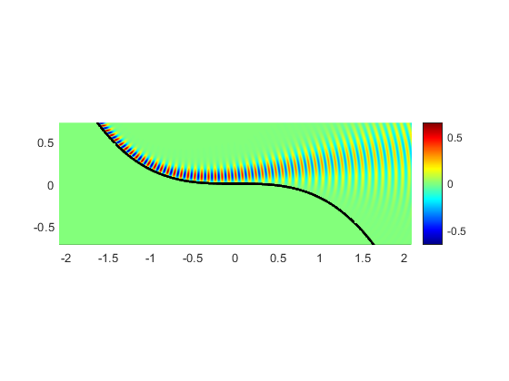

clear all, close all
range = [-5 5 -10 10];
includeRegion = @(x,y) y>-x.^3/6;
k = 80;
mu = 20;
x0=k^(-1/5)*linspace(range(1),range(2),ceil((range(2)-range(1))*mu*k^(4/5)/(2*pi))+1);
y0=k^(-3/5)*linspace(range(3),range(4),ceil((range(4)-range(3))*mu*k^(2/5)/(2*pi))+1);
[X0, Y0] = meshgrid(x0,y0);
reg = includeRegion(X0,Y0);
tq=k^(1/5)*reg.*X0;
zq=k^(3/5)*reg.*(Y0+X0.^3/6);
theta=1/2;
WG=1;
t0=min(range(1),-range(2))
tmax=range(2)
Z=tmax^3/4;
dz=0.02;
dt=0.002;
tic
[tt,zz,u] = inflection_FD_Popov(theta,Z,t0,tmax,dz,dt,WG);
toc
figure
phi=exp(1i*k*(X0-.5*X0.^2.*Y0 - 7/120*X0.^5)).*(interp2(tt,zz,u,tq,zq));
surf(X0,Y0,real(phi),'LineStyle','none');
colorbar;
colormap jet;
view(2)
axis equal tight
hold on
plot3(x0,-x0.^3/6,5*ones(size(x0)),'k','LineWidth',2)
xlim([x0(1),x0(end)])
ylim([y0(1),y0(end)])
t0 =
-5
tmax =
5
M =
1562
N =
5000
Elapsed time is 3.630641 seconds.
